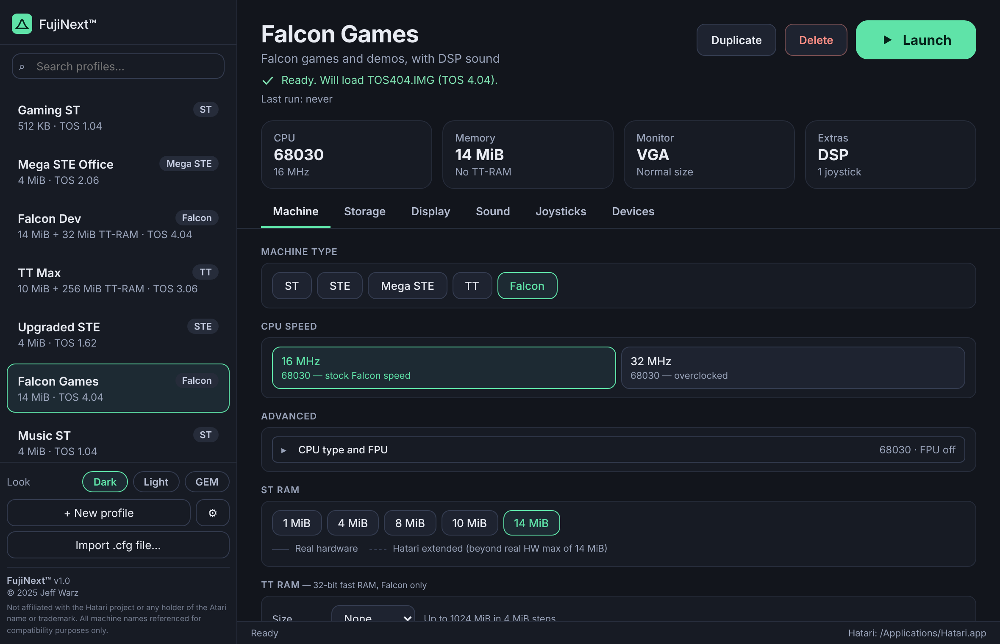

Your Atari, ready to launch.
Pick a machine, point FujiNext at your ROMs and disks, press Launch. Ready-made profiles, joysticks and devices, and a look that suits you. For macOS and Windows.
Free and open source. Needs Hatari installed.

This is the real app. Use the Look buttons above to see it in each look.
- Atari ST
- STE
- Mega STE
- TT
- Falcon
Everything in one place
FujiNext writes a Hatari configuration for each profile and starts Hatari with it. Hatari itself is never changed.
Ready-made profiles
Eight starting points, from a games ST to a Falcon with DSP, plus one that needs no TOS ROM at all. Duplicate them, change them, and restore the originals whenever you like. Your own profiles are never touched.
Machine settings
Machine type, CPU speed and type, FPU, ST RAM and TT-RAM, blitter, DSP and more, laid out clearly with the rarely used options folded away.
Finds your TOS ROMs
Point it at a folder and it identifies each ROM from its contents, whatever the file is called. It tells you which file will load, and why if it can't.
Storage
Floppy images, hard disk images (ACSI, SCSI, IDE) and a GEMDOS folder, with boot-from-hard-disk.
Joysticks and devices
Set up all six joystick ports with a game controller or the keyboard. Switch on printer, RS232 and MIDI emulation, with files for each.
Import your setup
Bring in an existing Hatari .cfg file as a new profile, and keep using Hatari the way you already do.
Display and sound
Monitor type, full screen, borders, pixel doubling and aspect ratio, plus sound on or off and the playback frequency.
Three looks
Dark, light, or chunky GEM. Switch any time from the sidebar, and FujiNext remembers your choice.
One profile per machine
Each profile is a complete snapshot of a machine. Here is a taste of what a profile holds.
Where it all started
The machine that brought GEM, MIDI and a mouse-driven desktop to the home. Great for classic games, music software and early desktop publishing.
Better colour and sound
An ST with a bigger palette, hardware scrolling, digital stereo sound and two joypad ports. A favourite of demo makers and game fans.
The workstation
A faster STE in a desktop case with a detached keyboard, a real-time clock and a 16 MHz CPU. Aimed at offices and serious users.
Power and big memory
A 32 MHz 68030 with fast TT-RAM and high-resolution graphics, built for workstation jobs such as CAD and publishing.
The last and the most capable
A 68030 with a DSP56001 signal processor, 16-bit stereo sound and a far wider range of colours. FujiNext sets up TT-RAM and 32-bit addressing for you.
Make it yours
Pick a look here and this page changes with it. The app has the same choice in the sidebar and in Settings.
Download and run
FujiNext is free and open source. It works with the Hatari you already have, so install Hatari first (on macOS with brew install hatari, on Windows with the official installer).
macOS
- Open the downloaded file and drag FujiNext into Applications.
- The first time, right-click the app and choose Open, then confirm. Or use System Settings → Privacy & Security → Open Anyway.
- Open Settings and point it at Hatari and your ROMs folder.
Windows
- Run the installer.
- If Windows warns about an unknown publisher, choose More info, then Run anyway.
- Open Settings and point it at Hatari and your ROMs folder.
FujiNext isn't signed with a paid developer certificate yet, which is why the first-run steps are needed. You supply your own TOS ROMs; EmuTOS (free) works with every machine and needs no extra file.